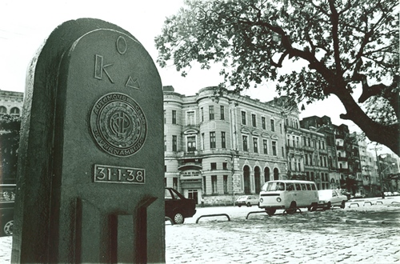
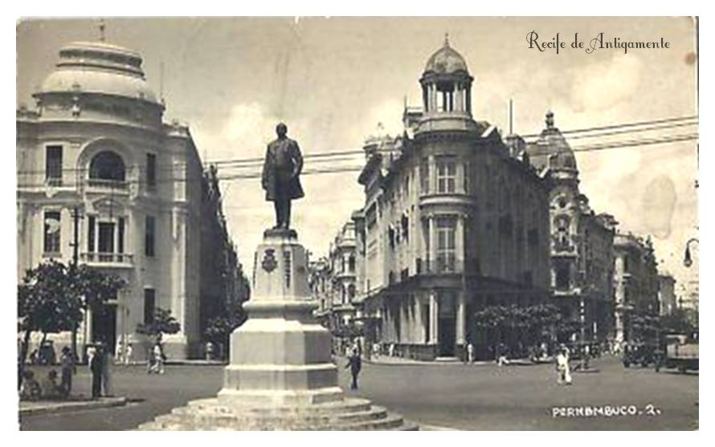

A história do Marco Zero Recife se confunde com a própria história do Brasil, no início da colonização portuguesa. No século XVI, a cidade começou a se desenvolver como um importante entreposto comercial devido à sua localização estratégica no Nordeste do país. Para demarcar o ponto onde a cidade começou a ser construída, foi estabelecido o Marco Zero. O monumento era originalmente uma simples cruz de madeira, que acabou sendo trocada anos depois por um marco mais permanente de pedra. Ele foi colocado no local onde desembarcavam os colonizadores, tornando-se uma referência geográfica e simbólica para a cidade. Ao redor do monumento, não demoraram a surgir as primeiras construções da cidade, como igrejas, pontes e casas coloniais. Mais recentemente, o Marco Zero foi devidamente revitalizado e ganhou uma nova estrutura, como um obelisco e uma ampla praça. Essa revitalização contribuiu para resgatar a importância histórica do local e transformá-lo em um ponto de encontro e celebração. Hoje, o lugar representa não apenas o ponto de partida para a história da cidade, mas também é um símbolo vivo da identidade e da alma do Recife.
 